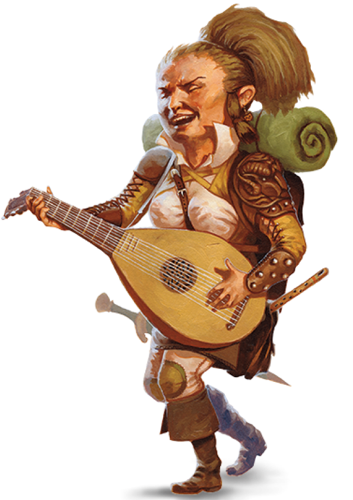

Комфорт у домі є ціллю життя більшості напівросликів: місце, де можна оселитися в тиші й спокої, подалі від монстрів-грабителів і армій, що зіткнулися. Інші формують кочові групи, які постійно подорожують, спокушені відкритою дорогою та широким горизонтом, щоб відкрити для себе чудеса нових земель і народів. Напіврослики охоче співпрацюють з іншими, і вони вірні своїм друзям, незалежно від того, чи то Напіврослики чи інші. Вони можуть проявляти надзвичайну лють, коли їх друзям, родинам чи громадам загрожуює небезпека.

Тип істоти
гуманоїд
Характеристики
спр +2
Розмір істоти
маленький
Швидкість
25 фт.
ТЗ
-
Щасливчик
Якщо при кидку атаки, перевірці характеристики або ряткидку у вас випало 1 ви можете перекинути цю кістку. Ви повинні використовувати новий результат, навіть якщо він дорівнює 1.
Хоробрий
Ви маєте перевагу на ряткидки проти страху.
Спритний
Ви можете проходити крізь простір, зайнятий істотами, розмір яких більше вашого.
Мови
Ви можете говорити, читати та писати Спільною та Напівросликовою.
Вік
Халфлінг досягає повноліття у віці 20 років і зазвичай доживає до середини свого другого століття.
Ви можете телепатично розмовляти з будь-якою істотою в радіусі 30 футів від вас. Істота розуміє вас, лише якщо у вас двох є спільна мова. Таким чином можна телепатично розмовляти з однією істотою за раз.
Лотостинські Напіврослики
Lotusden Halfling
Explorer's Guide to Wildemount
Характеристики
муд +1
Діти лісу
Ви знаєте заговір Ремесло друїдів [Druidcraft].
На 3-му рівні ви можете застосувати закляття заплутання [Entangle] один раз за довгий відпочинок.
На 5-му рівні ви можете використовувати закляття шипи [Spike Growth] один раз за тривалий відпочинок.
Для цих заклинань не потрібні зазвичай необхідні матеріальні компоненти.
Базовою характеристикою цього закляття є Мудрість.
Лісова прогулянка
Перевірки здібностей, призначені для відстеження, робляться з перешкодою, і ви можете пересуватися важкопрохідній місцевістю, утвореною немагічними рослинами та заростями, не витрачаючи додаткових рухів.
Напіврослик Мітки Гостинності
Mark of Hospitality Halfling
Eberron - Rising from the Last War
Характеристики
хар +1
Завжди гостинний
Кожного разу, коли ви кидаєте перевірку Харизми (Переконання) або перевірку здібностей, пов’язаних із Інструментами Пивовара чи Кухарським Посудом, кидайте d4 і додайте викинуте число до загальної перевірки здібностей.
Магія корчмаря
Вам відомий заговір фокуси [prestidigitation].
Ви також можете накладати закляття очищення їжі та пиття [purify food and drink] та невидимий слуга [unseen servant] використовуючи цю особливість.
Як тільки ви накладаєте будь-яке з цих заклинань подібним чином, вам необхідно закінчити тривалий відпочинок, щоб накласти це закляття подібним чином знову.
Базовою характеристикою цього закляття є Харизма.
Закляття Мітки
Якщо ви володієте вмінням Накладення заклинань або Магією договору, закляття з таблиці «Закляття Мітки Гостинності» додаються до списку заклинань вашого класу заклинань.
Рівень заклинань
Закляття
1
присипання [sleep], чудо-ягоди [goodberry]
2
підмога [aid], умиротворення [calm emotions]
3
Леомундова хижа [Leomund's tiny hut], створення їжі та води [create food and water]
4
аура очищення [aura of purity], кабінет Морденкайнена [Mordenkainen's private sanctum]
5
святилище [hallow]
Напіврослик Мітки Зцілення
Mark of Healing Halfling
Eberron - Rising from the Last War
Характеристики
муд +1
Медична інтуїція
Кожного разу, коли ви кидаєте перевірку Мудрості (Медицина) або перевірку здібностей, пов’язаних із набором травника, кидайте d4 і додайте викинуте число до загальної перевірки здібностей.
Цілющий дотик
Ви можете накладати закляття на лікування ран [cure wounds] за допомогою цієї особливості.
Починаючи з 3-го рівня, ви можете накласти закляття мале відновлення [lesser restoration].
Як тільки ви накладаєте будь-яке з цих заклинань подібним чином, вам необхідно закінчити тривалий відпочинок, щоб накласти це закляття подібним чином знову.
Базовою характеристикою цього закляття є Мудрість.
Закляття Мітки
Якщо ви володієте вмінням Накладення заклинань або Магією договору, закляття з таблиці ««Закляття Мітки Зцілення» додаються до списку заклинань вашого класу заклинань.
Рівень заклинань
Закляття
1
лікування ран [cure wounds], цілюще слово [healing word]
2
мале відновлення [lesser restoration], молебень лікування [prayer of healing]
3
аура живучості [aura of vitality], множинне слово [mass healing word]
4
аура життя [aura of life], аура очищення [aura of purity]